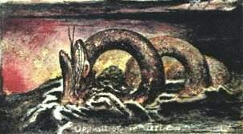
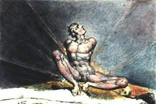

Bir Melek yanıma geldi ve dedi ki: ‘Ah acınası aptal genç adam! Ah ürkünç kişi! Ah dehşetli durum! Sonsuza dek kendin için hazırlıyor ve büyük bir hızla geçip gidiyor olduğun kavurucu zindanı düşün hele bir.’
Dedim ki: ‘Belki bana ebedi yazgımı göstermek istersin ve oturup üzerinde birlikte düşünürüz, hangimizin yazgısı en çekici, anlarız.’
Sonra beni bir ahırın ve bir kilisenin içinden geçirerek, dibinde bir kalıphane olan mâbedin mahzenine indirdi. Kalıphaneden geçtik ve bir mağaraya vardık. Mağaranın dolambaçlı yollarından aşağıya, can sıkıcı yolumuzda el yordamıyla ilerledik ve nihayet altımızda, yeraltı göğü gibi uçsuz bucaksız bir boşluk belirdi ve ağaçların köklerine tutunup bu ummanın üzerinde sallandık. Dedim ki: ‘Hadi gel kendimizi boşluğa bırakalım ve Tanrının inayeti burada mıymış görelim. Sen yapmasan da ben yapacağım.’ Dedi ki: ‘Hiç kalkışma, Ah genç adam, burada kal ve karanlık dağılır dağılmaz ortaya çıkacak yazgını gör.’
Böylece onunla kaldım, bir meşenin kıvrılmış köküne oturarak. O, derinlere doğru baş aşağı sarkan bir mantara asılıydı.
Derken, uçsuz bucaksız Cehennemi gördük, yanan bir kentin dumanı gibi alevler içindeydi, altımızda, sonsuz bir mesafede simsiyah ama parıldayan güneş duruyordu, onun da çevresinde, en korkunç hayvan biçimleriyle pislikten fışkırmış, ki hava bunlarla doluydu ve sanki bunlardan var edilmiş gibiydi, uçan ya da sonsuz boşlukta yüzen avların peşinden sürünen devasa örümceklerin dönüp durdukları, alevli yollar uzanıyordu. İblislerdir bunlar ve onlara havanın Güçleri denir. Hangisi benim sonsuz yazgım, diye sordum, yoldaşıma dönüp. ‘Siyah ve beyaz örümceklerin arasındaki,’ dedi.
Lâkin ve birden, siyah ve beyaz örümceklerin arasından bir bulut ve ateş patlayıverdi, altındaki her şeyi karartarak derinlere doğru yuvarlandı; öyle ki, aşağıdaki derinlik bir deniz gibi kapkara kesildi ve korkunç bir gürültüyle devrildi. Altımızda görülecek hiçbir şey yoktu artık, yalnızca kapkara bir fırtına; ta ki, bulutlar ve dalgalar arasından doğuya doğru bakınca, ateşlerle karışmış bir kan çağlayanı gördük ve durduğumuz yerden birkaç taş fırlayıp korkunç bir yılanın pullu kıvrımlarına gömüldü yeniden. Sonunda, doğuya doğru üç derece uzakta, dalgaların üzerinde alevlerle kaplı bir tepe belirdi, altın kayalardan bir dağ sırası gibi yükseldi usulca; baktıkça, denizin duman bulutları içinde uzaklaştığı kıpkızıl iki ateş küresi keşfettik, derken onun, [Tevrat’ta bahsi geçen Su Canavarı] Leviathan’ın kafası olduğunu anladık, alnı, bir kaplanın alnı gibi, yeşil ve mor çizgilerle bölünmüştü. Çok geçmeden ağzını ve kırmızı solungaçlarını gördük; öfkeden kuduran ve kanın ışıltılarıyla kapkara derinliği çınlatan köpüklerin üzerinden sarkmış, bize doğru ilerliyordu, tinsel bir varoluşun korkunç öfkesiyle.
Dostum Melek durduğu yerden kalıphaneye tırmandı. Tek başıma kalmıştım ki bu görünüm ansızın kayboldu, ve kendimi ay ışığının altında hoş bir ırmağın kıyısında otururken buldum, arp çalan bir şarkıyıcı dinliyordum, şarkısının sözleri şöyleydi: ‘Sabit fikirli kişi durgun suya benzer ve aklın sürüngenlerini yaratır.’
Kalktım ve kalıphaneyi araştırdım, Meleğime rastladım orada, şaşırmıştı, nasıl kurtulduğumu sordu bana.
Dedim ki: ‘Gördüğümüz her şeyin nedeni senin metafiziğindi, çünkü sen uzaklaşır uzaklaşmaz, ay ışığı düşmüş bir ırmağın kıyısında, kendimi bir arpçıyı dinlerken buldum. Artık ebedi yazgımı görmüş olduk, ben de seninkini göstereyim mi sana?’ Önerime kahkahalarla güldü, ama birden onu kollarımla sımsıkı kavradım ve gece boyunca, yeryüzünün gölgesi üzerinde yükselinceye dek, batıya doğru uçtum. Sonra onunla birlikte kendimi, güneşin gövdesinin ta içine fırlattım. Burada beyazlara büründüm, Swedenborg ciltlerini elime alarak harikulâde iklimden içeri daldık ve Satürn’e gelene dek bütün gezegenleri geçtik. Durdum ve soluklandım ve ardından Satürn ile sabit yıldızların arasındaki boşluğa atladım.
‘İşte,’ dedim, ‘eğer ki ona uzay denebilirse, bu uzayda senin yazgın.’ Derken ahırı ve kiliseyi gördük, onu alıp sunağa götürdüm, İncil’i açtım ve işte! Derin bir çukurdu, önümdeki Meleği iteleyerek içine indim, biraz sonra tuğladan yedi ev belirdi, birine girdik, içerde, hepsi de bellerinden zincirlenmiş bir kaç maymun ve Habeş maymunu vardı, dişlerini gösterip birbirlerini kapmaya çalışıyorlar, ancak zincirin kısalığı buna izin vermiyordu. Fakat bazen zincirlerin sündüğü oluyordu ve güçlü olan zayıfı yakaladı, sırıta sırıta çiftleşti önce onunla, ardından parçalayıp yuttu, tek tek kollarını kopararak, âciz bir beden kaldı geriye. Sırıttıktan ve aldatıcı bir şefkatle öptükten sonra, diğerleri de çarçabuk yiyip bitirdi gövdeyi ve etrafta kendi kuyruğundan iştahla et koparan biri vardı. Leş kokusu her ikimizi de fena halde rahatsız edince kalıphaneye girdik, ve ellerimle, kalıphanenin içinde Aristoteles’in Analitik’i oluveren bir gövdenin iskeletini taşıyordum.
Melek birden, ‘Senin sınırsız hayal gücün beni rahatsız etti,’ dedi, ‘utanmalısın.’
Dedim ki, ‘Birbirimizi kandırıyoruz biz, ki yapıtları sadece Analitik olan senle konuşmak, boşa vakit kaybı.’

Karşıtlık Hakiki Dostluktur.

Tek bilge onlarmış gibi, kendilerinden daima övünçle söz eden Melekler tanıdım, ki dizgesel uslamlamanın doğurduğu, cüretkâr bir küstahlıktı bu yaptıkları.
Bu yüzden ki Swedenborg, yazdıklarının yeni olduğuyla övünür; oysa yazdıkları, daha önceden basılmış kitapların sadece İçindekiler ya da Dizin bölümleridir.
Gösteriş olsun diye bir maymun taşıyordu adamın biri ve maymundan dirhem dirhem bilge olduğu için kibirlendi, ve yedi adamdan çok daha bilge olduğuna inandı zavallı. Swedenborg’a olan da budur, kiliselerin budalalığını gösterir ve iki yüzlüleri teşhir eder, ta ki her şeyin dinsel olduğunu hayal edene ve yeryüzünde ağ parçalayanın bir tek kendisi olduğunu sanana dek.
Şimdi şu yalın gerçeğe kulak verin: Swedenborg tek bir yeni hakikat yazmamıştır. Şimdi de bir diğerine: hep eski sahtekârlıkları yazmıştır.
Ve şimdi de nedenini dinleyin. Sadece ve tümüyle dindar Meleklerle konuşmuş, dinden nefret eden İblisleri hiç dinlememiştir; zira kendini beğenmişliğiyle bunu beceremezdi.
Bu yüzden Swedenborg’un yazdıkları tüm yüzeysel düşüncelerin bir özeti ve daha yüce olanların bir çözümlemesidir, hepsi bu.
Şimdi de bir başka basit gerçek: Mekanik yeteneklere sahip herhangi biri, Paracelsus ya da Jacob Behmen’in yazılarından, Swedenborg’unkilere eşdeğer on bin cilt üretebilir, Dante’nin ya da Shakespear’inkilerden ise, sınırsız sayıda.
Fakat bunu yaptığında, ustasından daha iyi bildiğini söyletmeyin, zira o, sadece bir mum tutmuştur günışığında.